기계정비산업기사 (2014-05-25 기출문제)
1과목: 공유압 및 자동화시스템
1. 공유압 변환기 사용 시 주의사항으로 옳은 것은?
- 수평방향으로 설치한다.
- 열원에 가까이 설치한다.
- 반드시 액추에이터 보다 낮게 설치한다.
- 실린더나 배관 내의 공기를 충분히 뺀다.
(정답률: 82%)

2. 비교적 큰 먼지를 제거할 목적으로 사용되는 기기로, 유압회로에서 펌프의 흡입관로에 사용되는 것은?
- 탱크
- 스트레이너
- 필터
- 어큐뮬레이터
(정답률: 72%)
3. 유공압 기호에서 온도계 기호로 옳은 것은?
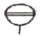
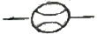
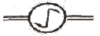
(정답률: 89%)
4. 드릴 및 보링 공구를 이용하여 구멍을 뚫거나 구멍을 확장시키는 다축보링머신과 같은 공작기계에서 관통구멍의 경우 부하가 급격히 감소하므로 스핀들이 급진된다. 이를 방지하기 위하여 실린더에 유량조절밸브를 설치한다. 이러한 회로를 무엇이라 하는가?
- 감속회로(deceleration circuit)
- 미터 인 회로(meter in circuit)
- 미터 아웃 회로(meter out circuit)
- 블리드 오프 회로(bleed off circuit)
(정답률: 55%)
5. 내경 10cm, 추력 3140 kgf, 피스톤 속도 40m/min 유압실린더에서 필요로 하는 유압은 최소 몇 kgf/cm2인가?
- 40
- 60
- 80
- 160
(정답률: 58%)
6. 유압의 동조회로에서 동조운전을 방해하는 요소로 보기에 가장 거리가 먼 것은?
- 마찰 차이
- 펌프 토출량
- 내부누설의 양
- 실린더 안지름 차이
(정답률: 49%)
7. 다음 중 압력제어밸브로 옳은 것은?
- 체크 밸브
- 리듀싱 밸브
- 셔틀밸브
- 감속 밸브
(정답률: 48%)
8. 그림에서 제시한 2압 밸브의 특성으로 옳지 않은 것은?
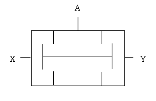
- AND의 논리를 만족한다.
- 먼저 들어온 고압 압력신호가 출구 A로 나간다.
- 압축공기가 2개의 입구 X,Y에 모두 작용할 때에만 출구 A에 압축공기가 흐른다.
- 2개의 입력신호가 다른 압력일 경우에는 낮은 압력공기가 출구 A로 출력된다.
(정답률: 60%)
9. 공기압 장치의 구성 요소가 아닌 것은?
- 원심 펌프
- 애프터 쿨러
- 공기 탱크
- 공기 압축기
(정답률: 62%)
10. 공압 루트 블로어(Roots blower)에 대한 설명으로 옳은 것은?
- 소음이 작다.
- 토크변동이 작다.
- 비접촉형으로 무급유식이다.
- 대형이고, 고압 송풍을 할 수 없다.
(정답률: 66%)
11. 유압펌프의 소음발생 원인이 아닌 것은?
- 펌프 흡입 불량
- 작동유 점성 증대
- 펌프의 저속회전
- 이물질의 침입
(정답률: 86%)
12. 그림과 같은 공기압 실린더의 올바른 명칭은?
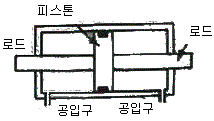
- 단동 실린더
- 편로드 복동 실린더
- 전동기 과부하
- 양로드 복동 실린더
(정답률: 90%)
13. 직류전동기 과열의 원인이 아닌 것은?
- 퓨즈의 융단
- 베어링 조임 과다
- 전동기 과부하
- 브러시 압력 과다
(정답률: 70%)
14. 정보의 정의역이 어느 구간에서 모든 점으로 표시되는 신호로서 시간과 정보가 모두 연속적인 신호는 어느 것인가?
- 연속 신호
- 이산시간 신호
- 디지털 신호
- 아날로그 신호
(정답률: 71%)
15. 그림과 같은 선형 스텝모터에서 스핀들 리드가 0.36cm이고, 회전각이 1°라고 하였을 때 이송거리는 몇 mm인가?
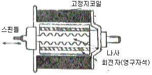
- 0.01
- 0.02
- 0.03
- 0.04
(정답률: 70%)
16. 컨베이어를 이용한 자동화시스템을 설계하고자 할 때 고려해야할 기본 설계원칙에 해당되지 않는 것은?
- 이송능력한계
- 속도의 원칙
- 균일성의 원칙
- 투입 산출의 원칙
(정답률: 69%)
17. 자동화 시스템의 목적으로 가장 거리가 먼 것은?
- 원가 절감
- 이익의 극대화
- 제품 품질의 균일성
- 생산 탄력성 증가
(정답률: 61%)
18. 유도형 센서의 감지거리에 대한 설명으로 옳지 않은 것은?
- 공칭검출거리 - 제조공정, 온도, 공급전압에 의한 허용치를 고려하지 않은 상태의 거리
- 정미검출거리 - 정격전압과 정격주위 온도일 때 측정하는 거리
- 유효검출거리 - 공급전압과 주위온도의 허용 한도 내에서 측정한 거리
- 정격검출거리 - 어떠한 전압변동 또는 온도변화에도 관계없이 표준 검출제를 검출할 수 있는 거리
(정답률: 54%)
19. 다음 그림과 같은 타이밍 차트(timing chart)에서 입력은 A와 B이며, 출력은 Y일 때 이 타이밍 차트는 어떤 회로인가? (단, 입ㆍ출력 모두 알논리로 동작한다.)
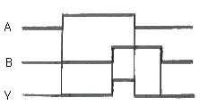
- AND 회로
- OR 회로
- NOT 회로
- NAND 회로
(정답률: 80%)
20. 제작자에 의해 한번만 프로그램 되는 메모리는 어느 것인가?
- RAM
- Mask ROM
- EAROM
- EPROM
(정답률: 67%)
2과목: 설비진단관리 및 기계정비
21. 자재흐름분석의 P-Q분석에 의하여 분류가 결정되면 그 분류 내에 있는 제품들에 대한 개별적인 분석을 행할 때 그 분류와 내용이 옳은 것은?
- D급 분류 : 제품의 종류도 적고 생산량도 적다. 소품종 공정표를 작성한다.
- C급 분류 : 제품의 종류는 적고 생산량이 많다. 단순작업 공정표 다음 조립공정표를 작성한다.
- B급 분류 : 제품의 종류는 중간이고 생산량도 중간이다. 다품종 공정표를 작성한다.
- A급 분류 : 제품의 종류는 많고 생산량은 적다. 유압 유출표를 작성한다.
(정답률: 76%)
22. 투과계수가 0.001일 때 투과 손실량은?
- 20dB
- 30dB
- 40dB
- 50dB
(정답률: 52%)
23. 기술면의 표준 중 목표가 되는 표준을 지칭하는 것은?
- 규격
- 사양서
- 지도서
- 조직규정
(정답률: 58%)
24. 정현파 신호에서 피크값(편진폭)을 기준한 진동의 크기가 1일 때 실효값의 크기는?
- 2
- 1/2
- 1/π
- 1/√2
(정답률: 80%)
25. 설비진단 기법 중 금속성분 특유의 발광 또는 흡광현상을 이용하는 기법은?
- 진동법
- 페로그래피법
- SOAP법
- 응력법
(정답률: 76%)
26. 정비계획에 필요한 예비품의 종류 중 전 공장에 영향을 미치는 동력 설비에서 많이 볼수 있는 것은?
- 부품 예비품
- 라인 예비품
- 단일 기계 예비품
- 부분적 세트 예비품
(정답률: 50%)
27. 음의 지향지수 [DI]에 대한 설명 중 틀린 것은?
- 음원이 자유공간에 있을 때는 DI는 0dB 이다.
- 반자유공간(바닥 위)에 음원이 있을 때 DI는 +3dB 이다.
- 두면이 접하는 구석에 음원이 있을 때 DI는 +6dB 이다.
- 세면이 접하는 구석에 음원이 있을 때 DI는 +12dB 이다.
(정답률: 68%)
28. 기계 진동이 공진으로 인하여 높은 경우, 진동을 저강하는 방법으로 잘못된 것은?
- 구조물의 강성을 높여 고유 진동 주파수를 낮은 영역으로 변화시킨다.
- 구조물의 질량을 크게 하여 고유 진동 주파수를 낮은 영역으로 변화시킨다.
- 구조물의 강성을 낮추어 고유 진동 주파수를 낮은 영역으로 변화시킨다.
- 구조물의 강성과 질량을 적절히 조절하여 현재 가진되고 있는 공진 주파수 영역을 피하도록 한다.
(정답률: 59%)
29. 설비보전의 표준화가 가져오는 직접적인 이점과 가장 거리가 먼 것은?
- 설비보전 기술의 축적
- 설비 개량 또는 설계능력 향상
- 생산 제품의 불량률 증대
- 설비보전 작업의 효율성 증대
(정답률: 87%)
30. 설비는 사용기간이 길면 길수록 자본 회수비는 감소하나 열화에 의한 보전비와 운영비는 증가한다. 이 두 비용의 총비용이 최소가 되는 수명은?
- 경제수명
- 실질유효수명
- 내용연수
- 운전수명
(정답률: 59%)
31. 베어링의 결함 유무를 측정하고자 할 때 사용되는 진동측정용 센서는?
- 변위계
- 속도계
- 가속도계
- 레벨계
(정답률: 63%)
32. 설비보전 상 청소, 급유, 조정, 부품교체 등의 적절한 시기를 산정하는 기준은?
- 성능기준
- 검사기준
- 예방기준
- 정비기준
(정답률: 72%)
33. 설비가동부문의 운전자들이 소집단활동을 중심으로 운전자 또는 작업자 스스로 전개하는 생산보전 활동은?
- 일상보전
- 예방보전
- 자주보전
- 개량보전
(정답률: 71%)
34. 다음 중 자재를 취급하는데 공간적인 면에서 가장 유연성이 우수한 장비는?
- 자동 저장/반출 시스템(AS/RS)
- 호이스트(hoist)
- 무인 반송차(AGV)
- 팔렛 트럭(paliet truck)
(정답률: 63%)
35. 일반적으로 시스템을 구성하는 기본적 요소에 속하지 않는 것은?
- 투입
- 처리기구
- 산출
- 품질
(정답률: 70%)
36. 동점도를 나타내는 단위로 옳은 것은?
- cm2/sec
- sec/cm2
- m/sec2
- sec/m2
(정답률: 65%)
37. 보전 작업 표준에서 표준시간의 결정방법이 아닌 것은?
- 경험법
- 실적 자료법
- 작업 연구법
- 관적 자료법
(정답률: 71%)
38. 진동차단기로 이용되는 패드의 재료로써 적합하지 않은 것은?
- 스폰지 고무
- 파이버 글라스
- 코르크
- 알루미늄합금
(정답률: 72%)
39. 다음 보전 조직은 무엇인가?
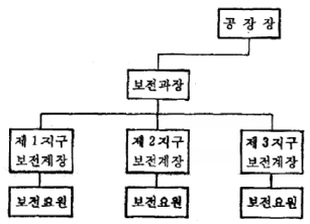
- 집중보전 조직
- 부분보전 조직
- 지역보전 조직
- 절충보전 조직
(정답률: 78%)
40. 생산의 정지 혹은 유해한 성능저하를 초래하는 상태를 발견하기 위한 설비의 정기적인 검사를 무엇이라 하는가?
- 개량보전
- 사후보전
- 예방보전
- 보전예방
(정답률: 80%)
3과목: 공업계측 및 전기전자제어
41. 계측(계장)용 문자 기호로서 유량지시 조절경보계의 표시방법이 맞는 것은?
- FICA - 201
- TRCA - 201
- QICA - 201
- LRCA - 201
(정답률: 62%)
42. 논리회로의 불대수
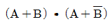
를 간략화 한 것은?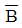
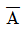
- B
- A
(정답률: 72%)
43. 복합루프 제어계가 아닌 것은?
- 캐스케이드제어
- 선택제어
- 비율제어
- 비례적분제어
(정답률: 51%)
44. 10진수 256을 BCD 코드로 변환한 것은?
- 0101 0110 0010
- 0010 0101 0110
- 0010 0101 0100
- 0101 0110 0110
(정답률: 68%)
45. 다음 그림기호 중 한시동작형 a 접점은?
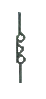
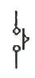
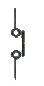
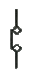
(정답률: 78%)
46. 차압식 유량계의 차압 기구에 해당되지 않는 것은?
- 회전자
- 오리피스
- 벤투리관
- 피토관
(정답률: 68%)
47. 되먹임 제어(feed back control)에서 반드시 필요한 장치는?
- 구동기
- 조작기
- 검출기
- 비교기
(정답률: 72%)
48. 계측된 신호를 전송할 때 발생하는 노이즈의 원인과 거리가 먼 것은?
- 전도
- 정전유도
- 중첩
- 온도변화
(정답률: 67%)
49. 다음 중 열전대 조합으로 사용되지 않는 것은?
- 백금 - 콘스탄탄
- 백금 - 백금로듐
- 구리 - 콘스탄탄
- 철 - 콘스탄탄
(정답률: 75%)
50. 직류전동기에서 저항기동을 하는 목적으로 가장 옳은 것은?
- 전압을 제어한다.
- 저항을 제어한다.
- 속도를 제어한다.
- 기동전류를 제한한다.
(정답률: 54%)
51. 다음 중 수동형 센서(Passive sensor)에 속하는 것은?
- 포토 커플러
- 포토 리플렉터
- 레이저 센서
- 적외선 센서
(정답률: 64%)
52. 외력이 없을 때는 닫혀 잇고 외력이 가해지면 열리는 접점은?
- a 접점
- b 접점
- c 접점
- d 접점
(정답률: 79%)
53. 내부저항이 20[kΩ]인 전압계에 40[kΩ]의 배율기를 접속하여 어떤 접압을 측정하였더니 전압계의 지시가 50[v]였다면 측정전압[V]은?
- 50
- 100
- 150
- 200
(정답률: 39%)
54. 다음 중에서 압력스위치의 표시 문자기호는?
- PS
- FS
- PXS
- PHS
(정답률: 74%)
55. 다음 설명 중 틀린 것은?
- 3상 유도전동기는 운전 중 전원이 1선 단선되어도 운전이 계속된다.
- 단상 유도전동기는 기동을 위해 보조권선을 사용한다.
- 콘덴서전동기는 콘덴서에 의해 역률이 높고, 토크가 균일하며 소음이 작다.
- 분상기동형 단상 유도전동기의 회전방향 변경은 전원의 접속을 바꾼다.
(정답률: 48%)
56. 저항 R1=5[Ω], R2=10[Ω], R3=15[Ω]을 직렬로 접속하고 전압 120[V]인가하였을 때 저항 R3에 분배되는 전압[V]은?
- 20
- 40
- 60
- 80
(정답률: 62%)
57. 온도가 변화하면 저항 값이 매우 많이 변화하는 반도체를 무엇이라 하는가?
- 배리스터(Varistor)
- 서미스터(thermistor)
- CdS(황화 카드뮴)
- 발광 다이오드
(정답률: 78%)
58. 다음 중 기계식인 것은?
- 사이리스터
- 제너다이오드
- 트랜지스터
- 안내밸브
(정답률: 62%)
59. 제어밸브를 선정하는 필요 요건이 아닌 것은?
- 대상프로세스
- 적정재고
- 응답성
- 사용목적
(정답률: 80%)
60. 물리화학량을 전기적 신호로 변환하거나, 역으로 전기적신호를 다른 물리적인 량으로 바꿔주는 장치는?
- 트랜스듀서
- 엑츄에이터
- 포지셔너
- 오리피스
(정답률: 74%)
4과목: 기계정비 일반
61. 볼트와 너트의 다듬질 정도에 따라 어떻게 세 가지로 구분되는가?
- 3A, 2A, 1A
- 상, 중, 흑피
- 3B, 2B, 1B
- 1급, 2급, 3급
(정답률: 64%)
62. 송풍기 진동의 원인으로 볼 수 없는 것은?
- 축의 굽음
- 모터의 회전수 저하
- 임펠러의 마모나 부식
- 임펠러에 더스트(dust) 부착
(정답률: 71%)
63. 구름 베어링을 구성하는 기본 요소가 아닌 것은?
- 저널
- 내륜
- 전동체
- 리테이너
(정답률: 63%)
64. 죔쇄 △d, 기어의 열팽창계수 α, 가열온도 T일 때 기어내경 D는?
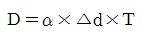
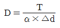
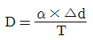
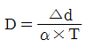
(정답률: 65%)
65. 폐수처리 설비에 사용되는 화학약품에 적합한 밸브는?
- 코크 밸브
- 플립 밸브
- 글루브 밸브
- 다이어프램 밸브
(정답률: 51%)
66. 펌프 축에 설치된 베어링에 이상현상을 일으키는 원인이 아닌 것은?
- 윤활유의 부족
- 축 중심의 일치
- 축 추력의 발생
- 베어링 끼워맞춤 불량
(정답률: 77%)
67. 볼트, 너트의 이완방지법이 아닌 것은?
- 분할 핀에 의한 방법
- 로크 너트에 의한 방법
- 특수 너트에 의한 방법
- 둥근 와셔에 의한 방법
(정답률: 63%)
68. 저전압 전동기가 고장 났을 시 고장진단방법으로 옳지 않은 것은?
- 전류를 측정한다.
- 권선저항을 측정한다.
- 절연저항을 측정한다.
- 손으로 전동기를 돌려 본다.
(정답률: 46%)
69. 다음 중 밸브의 손잡이를 90° 회전시킴으로 유로를 신속히 개폐할 수 있는 밸브는?
- 앵글 밸브
- 체크 밸브
- 코크 밸브
- 슬루스 밸브
(정답률: 47%)
70. 외측 마이크로미터를 0점 조정하고자 한다. 딤블(thimble)과 슬리브(sleeve)의 0점이 님블(thimble)의 한 눈금 간격에 1/2정도 어긋나 있다면 어떻게 조정하는가?
- 앤빌을 돌려서 0점을 맞춘다.
- 슬리브를 돌려서 0점을 맞춘다.
- 스핀들을 돌려서 0점을 맞춘다.
- 래칫 스톱(rachet stop)을 돌려서 0점을 맞춘다.
(정답률: 61%)
71. 수격현상에서 압력상승 방지책으로 사용되는 밸브는?
- 안전 밸브
- 슬루스 밸브
- 셔틀 밸브
- 언로딩 밸브
(정답률: 73%)
72. 테이터 핀을 밑에서 때려서 뺄 수 없을 경우에 적합한 분배 방법은?
- 테이퍼 핀을 정으로 잘라서 뺀다.
- 스크류 익스트랙터를 사용하여 뺀다.
- 테이퍼 핀 머리부분에 용점을 하여 뺀다.
- 테이퍼 핀 머리부분에 나사를 내어 너트를 걸어 뺀다.
(정답률: 72%)
73. 다음 동력전동장치 중 직접접촉에 의한 것은?
- 기어전동장치
- 체인전동장치
- 로프전동장치
- V벨트전동장치
(정답률: 58%)
74. 너트의 이완을 방지하는 방법 중 높이가 다른 2개의 너트를 사용하여 이완을 방지하는 방법은?
- 턴 버클에 의한 방법
- 절삭 너트에 의한 방법
- 로크 너트에 의한 방법
- 홈붙이 너트에 의한 방법
(정답률: 68%)
75. 센터링 불량으로 인한 현상이 아닌 것은?
- 기계 성능이 저하된다.
- 축의 진동이 증가한다.
- 동력의 전달은 원활하다.
- 베어링부의 마모가 심하다.
(정답률: 82%)
76. 롤러 체인을 스프로킷 휠이 부착된 평행 축에 평행걸기 할 때 거는 방법으로 적합한 것은?
- 긴장측에 긴장 풀리를 사용하여 건다.
- 이완측에 이완 폴리를 사용하여 건다.
- 긴장측은 위로, 이완측은 아래로 하여 건다.
- 긴장측은 아래로, 이완측은 위로 하여 건다.
(정답률: 73%)
77. 정비용 측정기구가 아닌 것은?
- 오스터(oster)
- 진동계(vibro-meter)
- 소음계(sound level meter)
- 베어링 체커(bearing checker)
(정답률: 78%)
78. 펌프의 배관을 90도로 방향을 바꾸고자 할 때 사용하는 배관용 이음쇠는?
- 크로스(cross)
- 유니온(union)
- 엘보우(elbow)
- 레듀셔(reducer)
(정답률: 76%)
79. 고가(高架) 탱크, 물 탱크 등에 자동운전을 위하여 사용되며, 부력을 이용한 것은?
- 유체 퓨즈
- 플로트 스위치
- 압력 스위치
- 유량 제어 스위치
(정답률: 63%)
80. 다음 그림은 기어 감속기에 부착된 명판이다. 이 감속기의 출력회전수는 얼마인가?
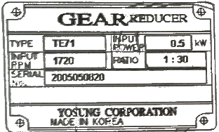
- 27.3 rpm
- 57.3 rpm
- 75.3 rpm
- 95.3 rpm
(정답률: 75%)